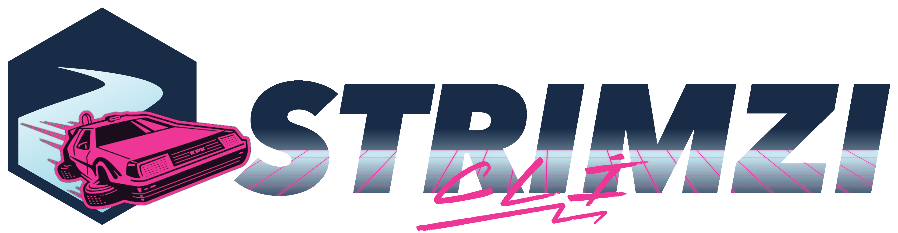

Kafka For Kubernetes
A CLI that helps traditional Apache Kafka users easily adapt to Strimzi, a Kubernetes operator for Apache Kafka. Manage clusters, topics, users, and more with familiar commands.
pip install strimzi-kafka-cli
Bringing the familiar Apache Kafka CLI experience to Kubernetes-native Kafka operations.
Uses the kfk prefix, mirroring the traditional kafka-* scripts. If you know Kafka, you already know Strimzi CLI.
Manages Strimzi custom resources directly through the Kubernetes API. No kubectl dependency required.
Create, alter, delete, and describe Kafka clusters, topics, users, ACLs, and Kafka Connect resources.
Built-in console producer and consumer for quick message testing directly from your terminal.
Manage TLS authentication, ACL authorization, OAuth, and listener configurations with simple flags.
Built-in Model Context Protocol server with 32 tools for AI-assisted Kafka management on Kubernetes.
Install Strimzi CLI in seconds. Requires Python 3.11 or higher.
With MCP server support:
Recommended for isolated environments.
Homebrew install uses a virtual environment automatically.
Manage your entire Strimzi deployment from the terminal.
| Command | Description |
|---|---|
kfk clusters |
Create, alter, delete, and describe Kafka clusters |
kfk topics |
Create, alter, delete, and describe Kafka topics |
kfk users |
Create, alter, delete, and describe Kafka users |
kfk acls |
Manage ACLs on Kafka |
kfk configs |
Add or remove entity config for topics, clients, and users |
kfk connect |
Manage Kafka Connect clusters and connectors |
kfk console-consumer |
Read data from Kafka topics |
kfk console-producer |
Publish data to Kafka topics |
kfk operator |
Install or uninstall the Strimzi Kafka Operator |
kfk mcp |
Start the Strimzi MCP server for AI-assisted management |
AI-powered Kafka management through the Model Context Protocol.
Strimzi CLI includes a built-in MCP server that exposes 32 tools for AI assistants to manage your Strimzi Kafka deployments on Kubernetes.
Works with any MCP-compatible AI assistant. Create clusters, manage topics, configure users, and monitor status through natural language.